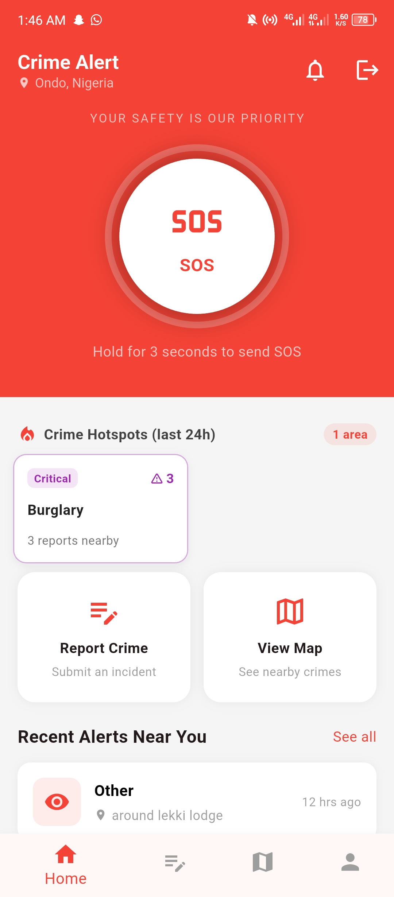
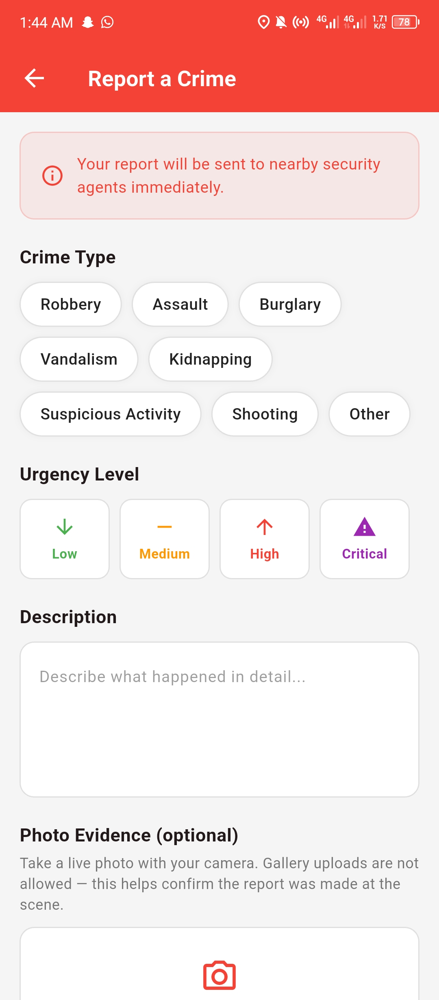
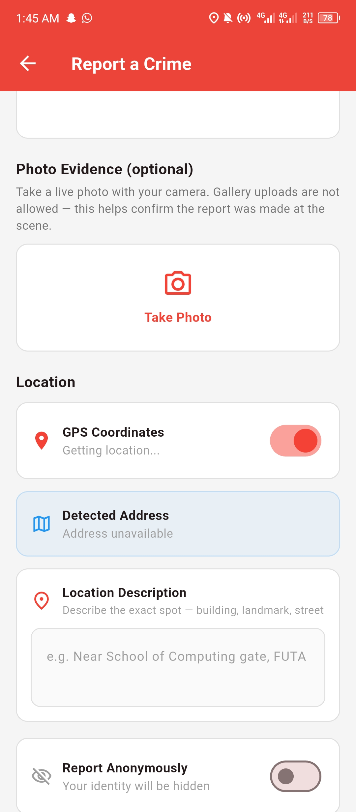
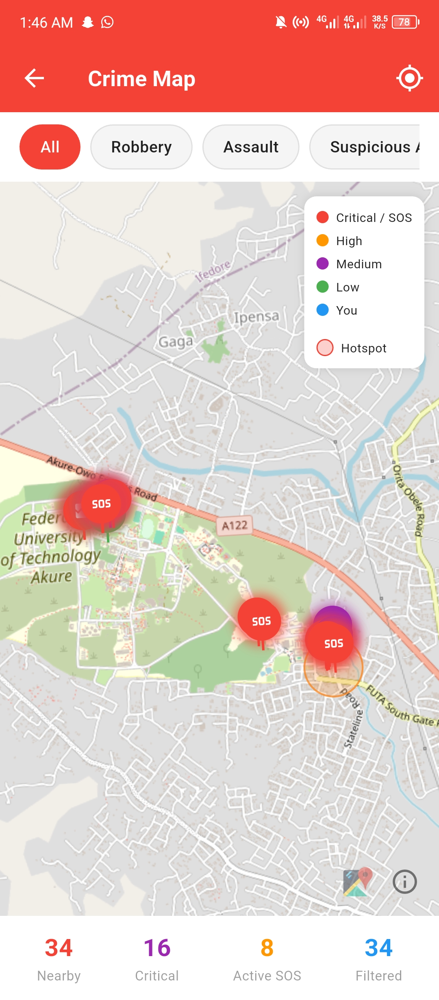

Case Study · Final Year Project
Crime Alert
A real-time crime reporting platform connecting citizens and security operatives — built to close the gap between an incident happening and the people who need to know about it.

The problem
In many Nigerian communities, reporting a crime in progress is slow and disconnected. Citizens often don't know who to call, security operatives don't know an incident is happening nearby until it's too late, and residents in the immediate area have no way of knowing they should stay alert or avoid a location. Crime Alert was built to shorten that chain — from "something is happening" to "the right people already know."
Research
Before building, I looked at how existing reporting channels function in practice — largely phone calls to police lines or informal community WhatsApp groups. Both are slow, undocumented, and don't reach anyone outside the immediate group. That gap — no structured, location-aware, real-time channel — shaped the core requirement: reports needed to be geotagged, timestamped, and pushed instantly to both operatives and nearby residents, without relying on someone manually forwarding a message.
Architecture
Crime Alert is split into two connected applications sharing one Firebase backend:
- Citizen mobile app (Flutter) — where residents submit reports with location, category, and description.
- Security dashboard (Flutter Web) — where operatives view incoming reports on a live feed, verify them, and coordinate response.
Using Flutter for both meant the majority of the UI logic and data models could be shared between the mobile app and the web dashboard, rather than maintaining two separate codebases in different languages.
Key features
- Structured reporting — crime type (robbery, assault, burglary, kidnapping, etc.) and an urgency level from Low to Critical, so operatives can triage at a glance.
- Live-only photo evidence — the camera captures a photo directly at the scene; gallery uploads are disabled to help confirm a report wasn't fabricated after the fact.
- GPS + manual location description — automatic coordinates as the primary source, with a landmark description field (e.g. "Near School of Computing gate, FUTA") as a fallback when GPS is unreliable.
- Anonymous reporting toggle — citizens can choose to hide their identity on a report.
- One-tap SOS — a hold-for-3-seconds SOS button on the home screen for active emergencies, separate from the standard report flow.
- Live severity-coded crime map — incidents plotted and color-coded (Critical, High, Medium, Low), with hotspot detection and running counts of nearby/critical/active SOS reports.


How location reporting works
When a citizen submits a report, the app captures their device's current GPS coordinates alongside the report details and writes it to Firestore. Each report is stored with a timestamp, a category (e.g. theft, assault, suspicious activity), and a status field used to track whether it's new, under review, or resolved.

Firebase implementation
Firestore acts as the real-time data layer: any new report written to the database is instantly reflected on the security dashboard through a live listener, with no need to refresh or poll. Firebase Authentication separates citizen accounts from operative accounts, so the dashboard is only accessible to verified security personnel.
Challenges
- Keeping the mobile app and web dashboard in sync in real time without excessive Firestore reads, which would increase cost at scale.
- Designing a geofencing radius that alerts genuinely nearby residents without over-notifying an entire district for a minor incident.
- Structuring Firestore security rules so citizens can only read their own submitted reports, while operatives can read all reports — without exposing sensitive report data publicly.
Results
As a final year project, Crime Alert was built and demonstrated as a fully working prototype covering the full reporting-to-alert flow: a citizen can submit a report, an operative sees it appear live on the dashboard, verifies it, and nearby residents receive a push notification — all without manual intervention at any step.